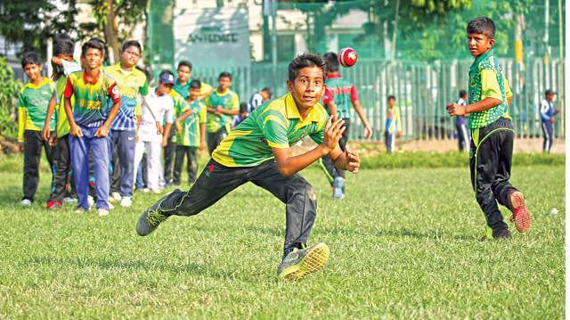
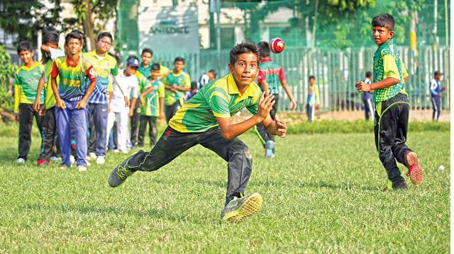

SARMIS Sports Tournament
 >

>

Sports in schools are very important and delicate to school kids. Kids rely on the sports program for many things like self-confidence and to start planning on a future for their lives. Our school has two playgrounds to play football and two for playing basketball. There will be tournaments to play football in every Grade from Grade-4 to Grade-11. There is an each team in every section and so if there are six sections in Grade-9, there will be six teams and a tournament is held until there are two teams to pay the final match. All schoolboys look active and alert with their team track-suit. There are also tournaments to play each sport. Teachers in charge will take care of their pupils in playground during tournament. They give them fresh limes and purified drinking water. The red-cross schoolboys and teachers are ready to help the injured players.The Headmaster will give the prize to the winners and the champion team who gets the first prize will take a group photograph.